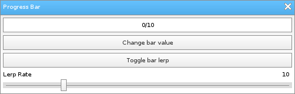

Löve Frames - The Progressbar Object
Return to Index
Information
The progress bar object functions like a normal progress bar.
The progress bar object can lerp and perform a function when it reaches it's maximum value.
Example Use
local frame = loveframes.Create("frame")
frame:SetName("Progress Bar")
frame:SetSize(500, 160)
frame:CenterWithinArea(unpack(demo.centerarea))
local progressbar = loveframes.Create("progressbar", frame)
progressbar:SetPos(5, 30)
progressbar:SetWidth(490)
progressbar:SetLerpRate(10)
local button1 = loveframes.Create("button", frame)
button1:SetPos(5, 60)
button1:SetWidth(490)
button1:SetText("Change bar value")
button1.OnClick = function(object2, x, y)
progressbar:SetValue(math.random(progressbar:GetMin(), progressbar:GetMax()))
end
local button2 = loveframes.Create("button", frame)
button2:SetPos(5, 90)
button2:SetWidth(490)
button2:SetText("Toggle bar lerp")
button2.OnClick = function(object2, x, y)
if progressbar:GetLerp() == true then
progressbar:SetLerp(false)
else
progressbar:SetLerp(true)
end
end
local slider = loveframes.Create("slider", frame)
slider:SetPos(5, 135)
slider:SetWidth(490)
slider:SetText("Progressbar lerp rate")
slider:SetMinMax(0, 50)
slider:SetDecimals(0)
slider:SetValue(10)
slider.OnValueChanged = function(object2, value)
progressbar:SetLerpRate(value)
end
local text1 = loveframes.Create("text", frame)
text1:SetPos(5, 120)
text1:SetText("Lerp Rate")
text1:SetFont(love.graphics.newFont(10))
local text2 = loveframes.Create("text", frame)
text2:SetFont(love.graphics.newFont(10))
text2.Update = function(object, dt)
object:SetPos(slider:GetWidth() - object:GetWidth(), 120)
object:SetText(slider:GetValue())
end

Event Callbacks
OnComplete - Called when the object reaches it's maximum value
- Arguments passed: self [object]
- Arguments passed: self [object]
local progressbar = loveframes.Create("progressbar")
progressbar.OnComplete = function(object)
print("Complete!")
end
Methods
SetMax - Sets the object's maximum value
- Returns 1 value: max [number]
- Returns 1 value: min [number]
- Returns 2 values: minimum [number], maximum [number]
- Returns 1 value: value [number]
- Returns 1 value: lerp [boolean]
- Returns 1 value: lerprate [number]
- Returns 1 value: completed [boolean]
- Returns 1 value: bar width [number]
- Returns 1 value: text [string]
object:SetMax(max[number])GetMax - Gets the object's maximum value
- Returns 1 value: max [number]
local max = object:GetMax()SetMin - Sets the object's minimum value
object:SetMin(min[number])GetMin - Gets the object's minimum value
- Returns 1 value: min [number]
local min = object:GetMin()SetMinMax - Sets the object's minimum and maximum values
object:SetMinMax(min[number], max[number])GetMinMax - Gets the object's minimum and maximum values
- Returns 2 values: minimum [number], maximum [number]
local min, max = object:GetMinMax(min[number], max[number])SetValue - Sets the object's value
object:SetValue(value[number])GetValue - Gets the object's value
- Returns 1 value: value [number]
local value = object:GetValue()SetLerp - Sets whether the object should lerp or not
object:SetLerp(lerp[boolean])GetLerp - Gets whether the object should lerp or not
- Returns 1 value: lerp [boolean]
local lerp = object:GetLerp()SetLerpRate - Sets the rate at which the object should lerp
object:SetLerpRate(lerp[number])GetLerpRate - Gets the rate at which the object should lerp
- Returns 1 value: lerprate [number]
local lerprate = object:GetLerpRate()GetCompleted - Gets whether or not the object has reached it's maximum value
- Returns 1 value: completed [boolean]
local completed = object:GetCompleted()GetBarWidth - Gets the object's bar width
- Returns 1 value: bar width [number]
local completed = object:GetCompleted()SetText - Sets the object's text
object:SetText(text[string])GetText - Gets the object's text
- Returns 1 value: text [string]
local text = object:GetText()